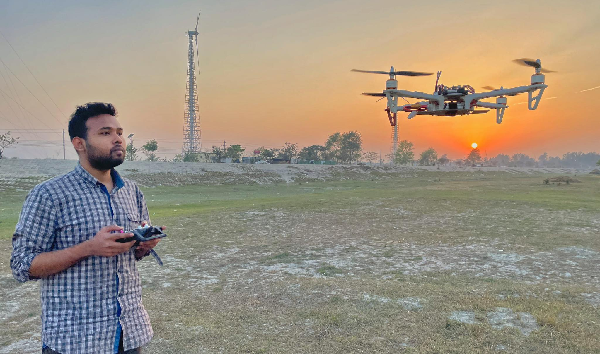
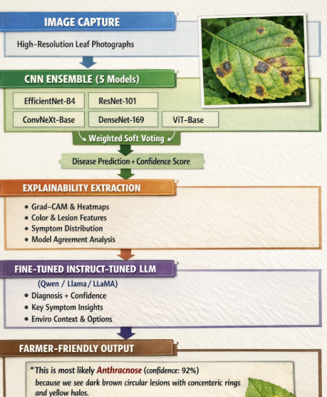
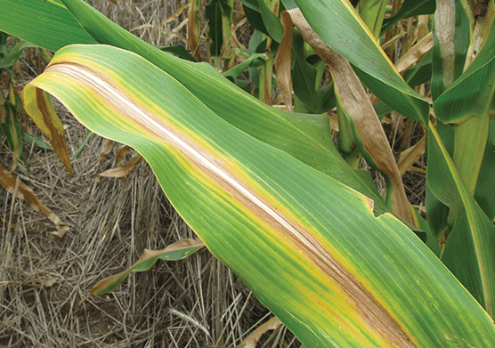
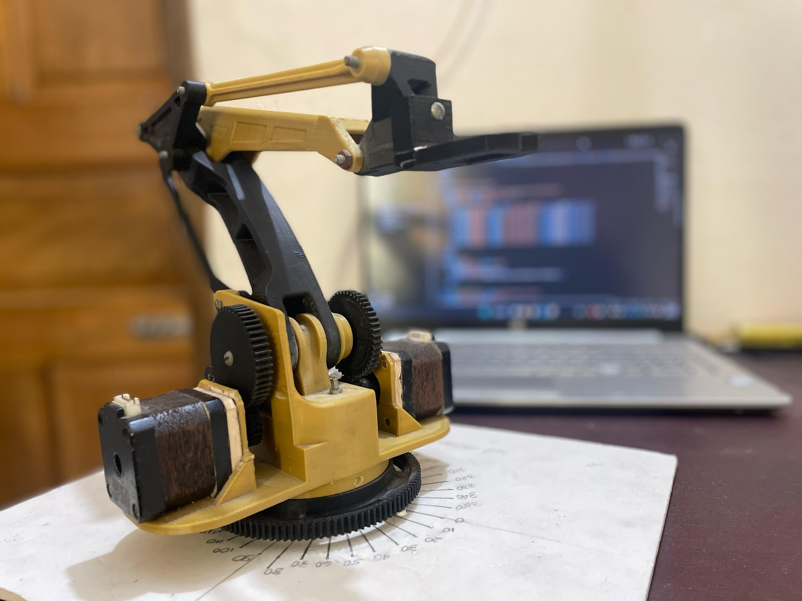
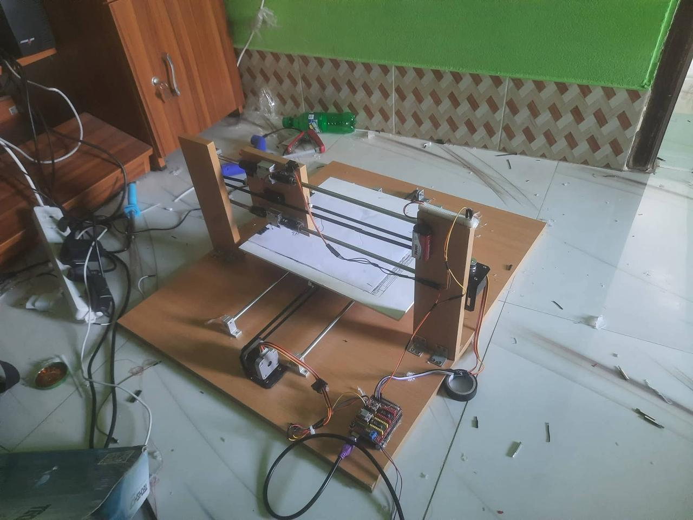
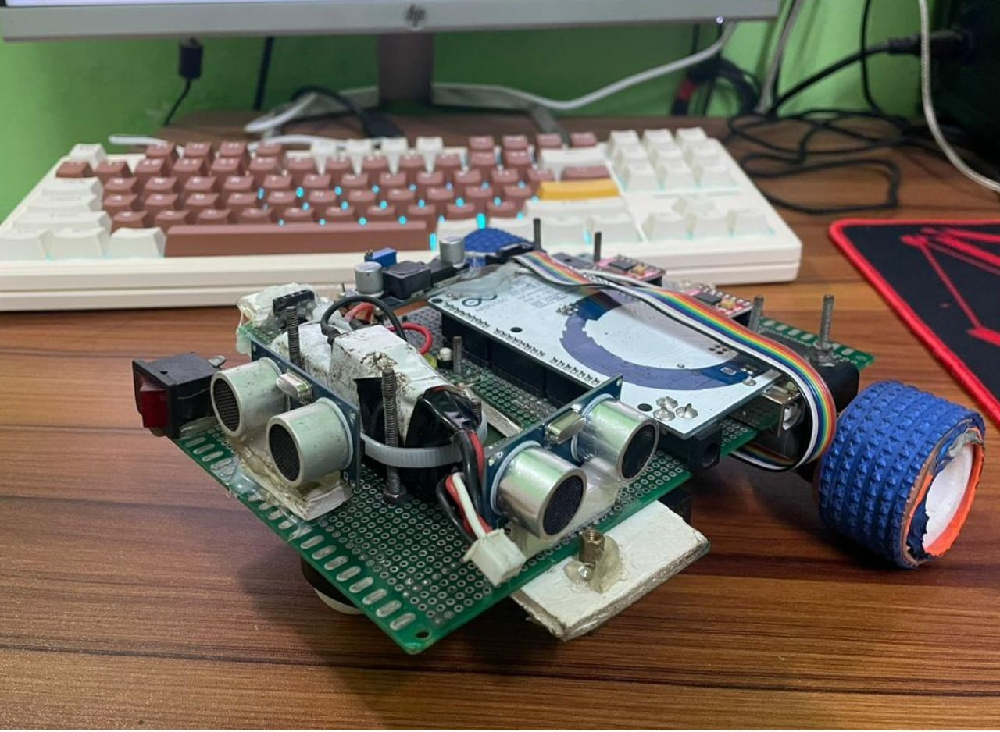
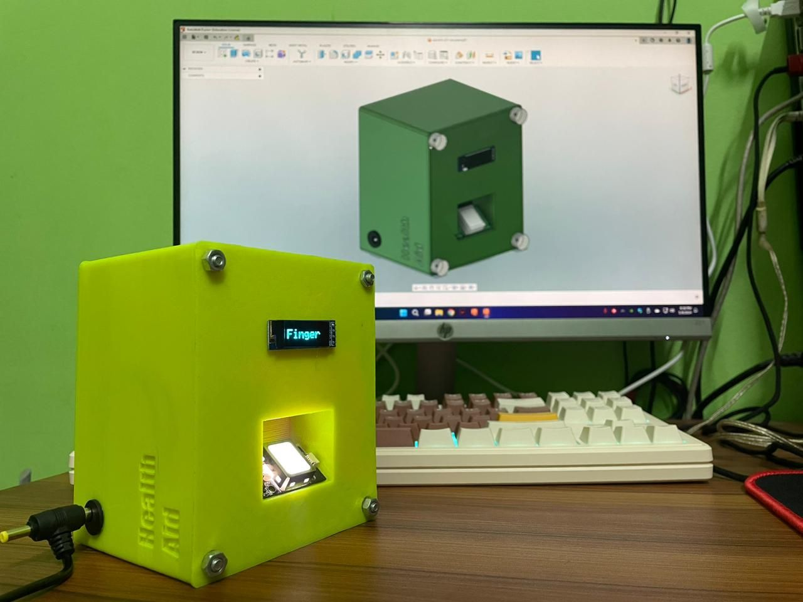
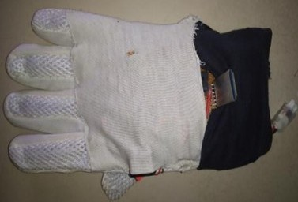
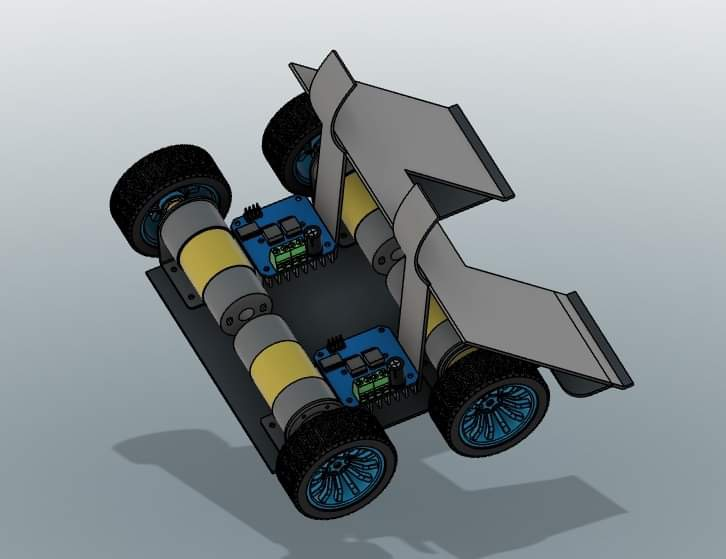
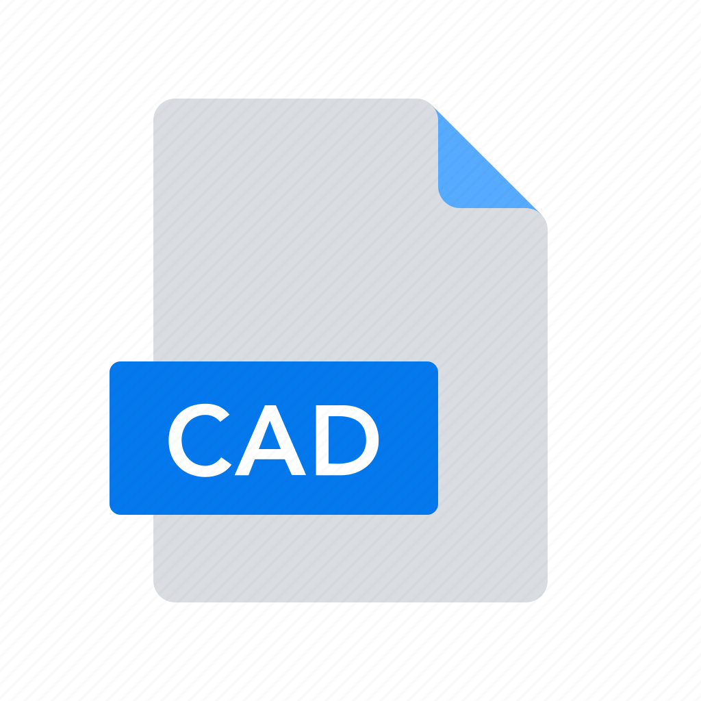

Zubayer Ahmed Aditto
M.S. Student, Mechanical Engineering
Graduate Researcher, Advanced Smart Manufacturing Lab (ASML)
University of North Texas, Denton, TX
About
I am an M.S. student in the Department of Mechanical Engineering at the University of North Texas (UNT), where I work as a graduate researcher in the Advanced Smart Manufacturing Lab (ASML) under the supervision of Dr. Jiho Lee. My research sits within human-centric smart manufacturing, with a focus on digital twins, human–robot/machine interaction, and collaborative robots.
I received my B.Sc. in Industrial and Production Engineering from Shahjalal University of Science and Technology (SUST), Bangladesh. As an undergraduate I designed and built robotic and embedded systems, from robotic manipulators and CNC machines to LLM-guided aerial robots and explainable deep-learning pipelines for precision agriculture. I was also a long-standing member of RoboSUST, the university robotics club, which I served as Vice President, and received nine national-level awards in robotics and engineering competitions.
Research Interests
News
- Fall 2026Joined the Advanced Smart Manufacturing Lab at UNT as an M.S. student in Mechanical Engineering, advised by Dr. Jiho Lee.
- Aug 2025Preprint on LLM-driven autonomous navigation of cloud-controlled quadcopters released on arXiv.
- 2025Paper on a vacuum-gripper pick-and-place robotic arm published in SciEn Conference Series: Engineering.
- 2025Received B.Sc. in Industrial and Production Engineering from SUST.
Publications
-
Autonomous Navigation of Cloud-Controlled Quadcopters in Confined Spaces Using Multi-Modal Perception and LLM-Driven High Semantic ReasoningarXiv preprint arXiv:2508.07885, 2025
-
Design, Development and Performance Evaluation of a Vacuum Type Gripper Based Pick and Place Robotic ArmSciEn Conference Series: Engineering, vol. 3, pp. 126–130, 2025
See also Google Scholar and ResearchGate for an up-to-date list.
Education
M.S. in Mechanical Engineering
2026 – Present
University of North Texas, Denton, TX, USA · Advisor: Dr. Jiho Lee
B.Sc. in Industrial and Production Engineering
2019 – 2025
Shahjalal University of Science and Technology, Sylhet, Bangladesh
Research Experience
Graduate Researcher
2026 – Present
Advanced Smart Manufacturing Lab (ASML), Department of Mechanical Engineering, University of North Texas
- Research on digital twins and human–robot/machine interaction for human-centric smart manufacturing.
Undergraduate Research Assistant
Jan 2022 – Jan 2023
Department of Industrial and Production Engineering, SUST
- Developed an IoT-based fingerprint attendance system using the ESP8266 for faculty and students.
Leadership & Service
Vice President, RoboSUST
Apr 2023 – Apr 2024
Robotics club of Shahjalal University of Science and Technology
- Set the club’s technical direction, organized hands-on workshops, and mentored junior members.
IT Secretary, IPE Association
Feb 2023 – Mar 2024
Department of Industrial and Production Engineering, SUST
Skills
- Programming
- Python, C, C++, MATLAB
- AI & Software
- PyTorch, large language model fine-tuning, Flask
- Robotics & Embedded
- ROS 2, Gazebo, Arduino, ESP8266/ESP32, circuit design and troubleshooting
- Design & Manufacturing
- SolidWorks, AutoCAD, Fusion 360, 3D printing, CNC machining
Selected Projects
AI & Autonomous Systems

Voice-Controlled Drone with a Fine-Tuned LLM
Natural-language UAV control that maps noisy, free-form voice commands to structured flight actions.

Explainable Strawberry Disease Detection
Ensemble deep learning with Grad-CAM explanations and an LLM interface for farmer-friendly diagnosis.

Nitrogen Deficiency Detection & Precision Fertilization
ResNet-based corn-leaf analysis with a web inference system and need-based fertilizer recommendation.

Compact Vision–Language Model
A 500M-parameter VLM for real-time visual understanding, streamed to a smartphone for field use.
Robotics & Mechatronics

Multifunctional Robotic Arm
3D-printed, ESP32-controlled stepper arm with web-based remote control and interchangeable suction or gripper end effector.

CNC Machine
Pen-plotter and laser-engraving CNC designed in Fusion 360, with custom electronics and a G-code workflow.

Line & Wall Following Robot
Arduino Mega robot with eight line sensors and three ultrasonic sensors; winner of eight national awards.

IoT Fingerprint Attendance System
ESP8266 fingerprint terminal that logs attendance live to Google Sheets.

Smart Gloves for Sign Communication
Flex-sensor and IMU glove that translates sign language into spoken audio.

Remote-Controlled Soccer Robot
Bluetooth-controlled, four-motor competition robot with a hand-built joystick controller.

CAD Design Portfolio
Mechanical parts and assemblies in SolidWorks, AutoCAD, and Fusion 360.
Honors & Awards
- 2024Champion, Line Following Robot, BUET EEE Day 2024 — Dept. of EEE, Bangladesh University of Engineering & Technology [photo]
- 20241st Runner-Up, Line Following Robot, BUET Robo Carnival 2024 — Bangladesh University of Engineering & Technology [photo]
- 2023Champion, Line Following Robot, Technocrats V.1 — IUBAT Innovation and Entrepreneurship Center [photo]
- 2023Champion, Line Following Robot, KUET EEE Day 2023 — Dept. of EEE, Khulna University of Engineering & Technology [photo]
- 2023Champion, Line Following Robot, RUET EEE Day 2023 — Dept. of EEE, Rajshahi University of Engineering & Technology [photo]
- 2023Champion, Line Following Robot, Calibration 1.0 — Dept. of Mechatronics Engineering, KUET [photo]
- 20231st Runner-Up, Line Following Robot, KUET Mechanical Fest 2023 — Dept. of ME, KUET [photo]
- 20231st Runner-Up, Line Following Robot, IUT EEE Fest 2023 — Dept. of EEE, Islamic University of Technology [photo]
- 1st Runner-Up, Industry Vision — Association of Industrial & Production Engineers (AIPE), BUET [photo]
Contact
Department of Mechanical Engineering
University of North Texas, Discovery Park
3940 N Elm St, Denton, TX 76207